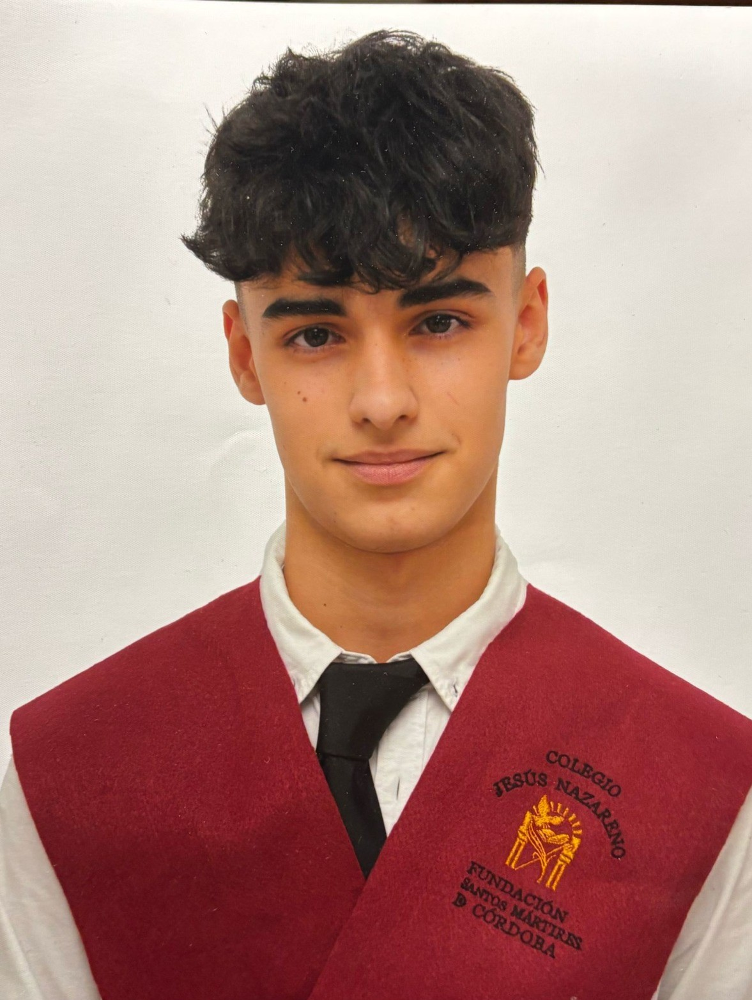

Javier Torres Jiménez
En estos dos últimos años he hecho un ciclo formativo de grado medio en Sistemas Microinformáticos y Redes en
IES Fidiana (2023-2025).
Actualmente, realizo mis prácticas en QualicaRD, una empresa ubicada en Córdoba, donde estoy adquiriendo la experiencia
de trabajar en una empresa de informática. Si quieres saber más sobre los conocimientos que he adquirido pulsa en Sobre mi.
Este es mi CV
